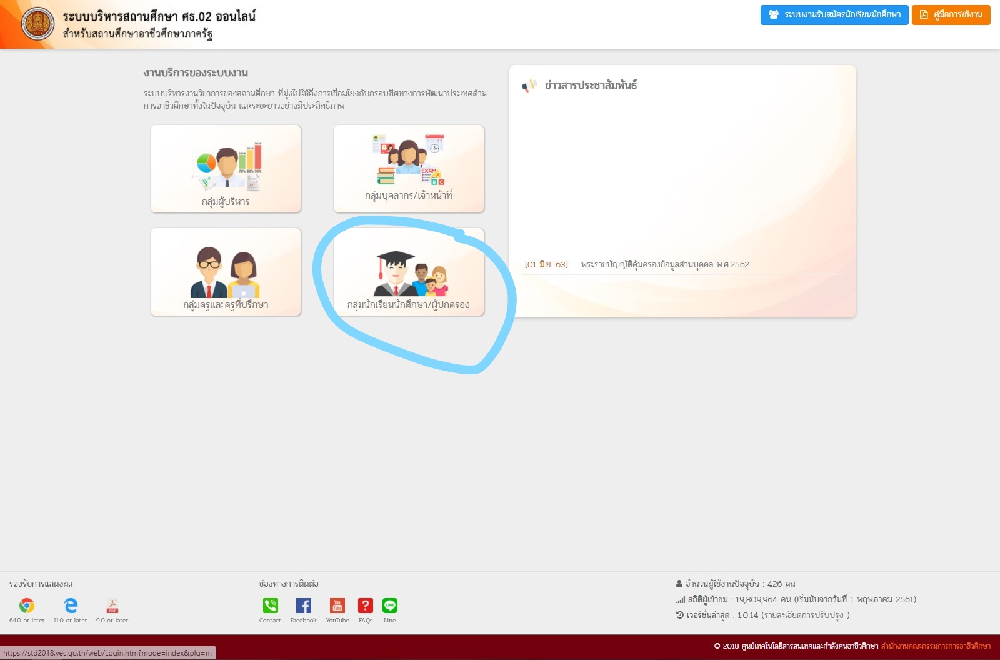
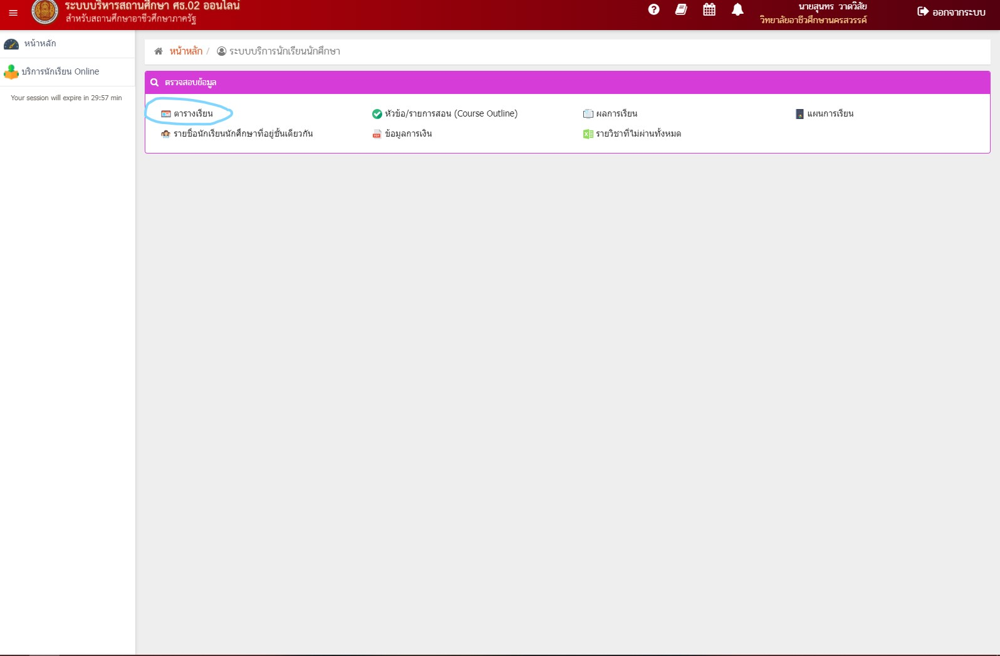
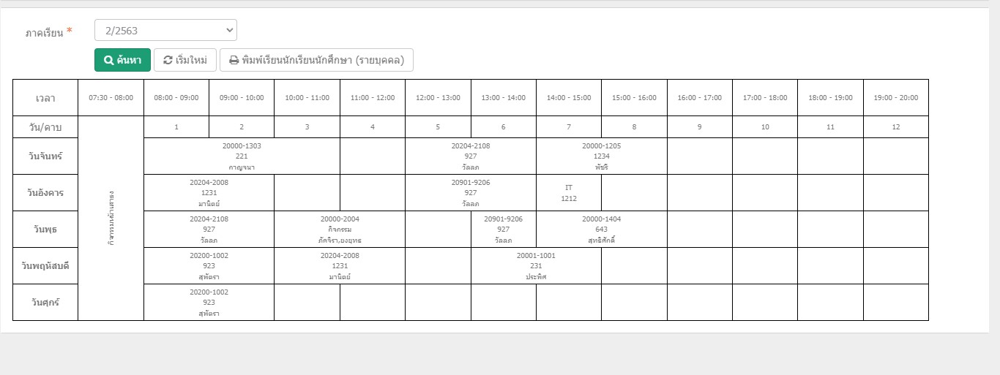

ศธ02 คืออะไร คือระบบงานของนักเรียน/นักศึกษา จะสามารถเข้ามาดูตารางการเรียนการสอน เกรดของเทอมนั้นๆ ขร,มผ,0 สามารถดูได้เพียงกรอกตัวเลขบัตรประจำตัวนักศึกษาและบัตรประจำตัวประชาชนของเราเอง

ถ้าหากได้ทำการสมัครเรียนแล้วมีเลขประจำตัวแล้วสามารถตรวจสอบตารางเรียนได้ เพียงทำตามขั้นตอนดังนี้
กรอกเลขประจำตัวนักศึกษาลงที่ช่องแรก ส่วนช่องที่ 2 ให้ใส่เป็นเลขรหัสบัตรประชาชนของนักศึกษา และเลือกวิทยาลัยอาชีวศึกษานครสวรรค์ จากนั้นกดเข้าสู่ระบบ
เมื่อเข้าสู่ระบบจะมีตาต่างแบบนี้ ให้เลือกไปที่ บริการนักเรียน online
จากนั้นเลือกตารางเรียน
จากนั้นจะมีให้เลือกภาคเรียนที่นักศึกษาอยากจะทราบ กดเลือกปีการศึกษาและเทอมได้เลยครับ
หลังจากเลือกแล้วจะมีหน้าตา ตารางสอนของเทอมนั้นให้และ ชื่ออาจาร์ยห้องต่างๆ
